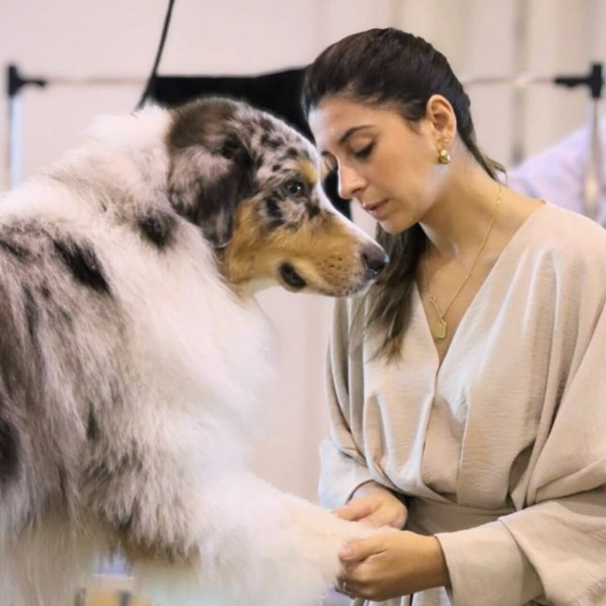

Sou groomer profissional em Cruz Quebrada, Oeiras, e especialista em Pastor Australiano. Trabalho com cães de todas as raças e feitios — dos mais destemidos aos mais tímidos — sempre com a mesma regra: nenhum cão sai daqui a tremer. I'm a professional groomer in Cruz Quebrada, Oeiras, and an Australian Shepherd specialist. I work with dogs of every breed and temperament — from the boldest to the shyest — always with one rule: no dog leaves here trembling.
O grooming pode ser assustador para um animal: água, secadores barulhentos, superfícies estranhas. A minha forma de trabalhar nasce da sensibilidade a isso mesmo — sessões com tempo, gestos previsíveis e muita paciência. E quando não estou no estúdio, provavelmente estou na praia, com sal no ar e cães na areia. Grooming can be scary for an animal: water, noisy dryers, unfamiliar surfaces. My way of working is born from being sensitive to exactly that — unhurried sessions, predictable gestures and a lot of patience. And when I'm not at the studio, I'm probably at the beach, salt in the air and dogs on the sand.
O ambiente do estúdio é pensado para acalmar: sem gritos, sem pressa, sem multidões. Como uma manhã tranquila junto ao mar. The studio environment is designed to soothe: no shouting, no rushing, no crowds. Like a quiet morning by the sea.
Cada cão comunica. Ler os sinais — uma orelha para trás, um bocejo — e responder com paciência é metade do trabalho. Every dog communicates. Reading the signs — an ear pinned back, a yawn — and responding with patience is half the job.
Do ringue de exposição ao sofá lá de casa, o acabamento é sempre o mesmo: cuidado ao detalhe, pelo a pelo. From the show ring to the sofa at home, the finish is always the same: attention to detail, hair by hair.
Os meus professores de todos os dias — e os primeiros a testar cada champô, cada escova e cada técnica nova. My everyday teachers — and the first to test every shampoo, every brush and every new technique.
Elegante e fotogénica — nasceu para brilhar, dentro e fora do ringue. Elegant and photogenic — born to shine, in and out of the ring.
Serena e meiga, a Eleanor é o coração calmo da casa. Serene and gentle, Eleanor is the calm heart of the house.
Curioso por natureza, feliz em qualquer trilho — de preferência com areia. Curious by nature, happy on any trail — preferably a sandy one.
✦ As descrições são carinhosas sugestões — a Soraia conhece-os melhor do que ninguém. ✦ These descriptions are affectionate suggestions — Soraia knows them better than anyone.
✦ Trato cada cão como trato os meus. I treat every dog the way I treat my own. ✦